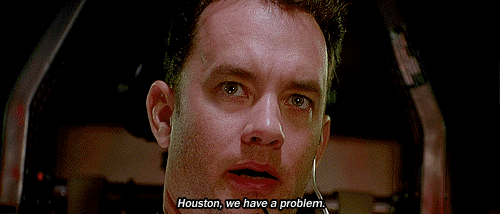
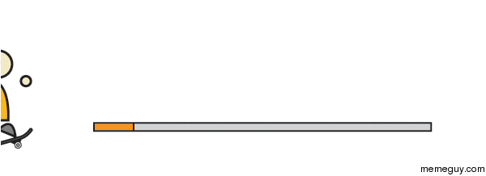
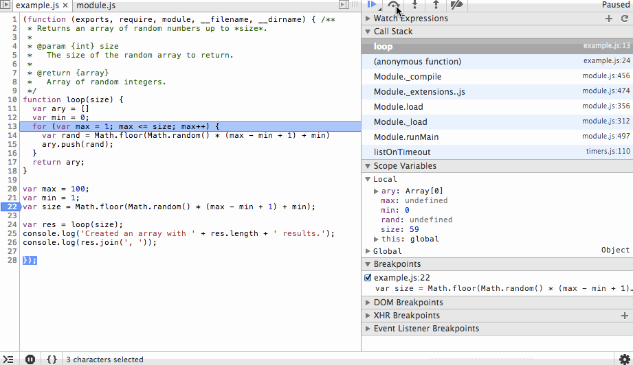
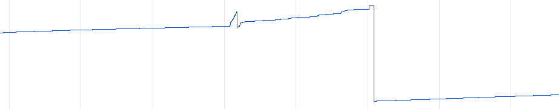
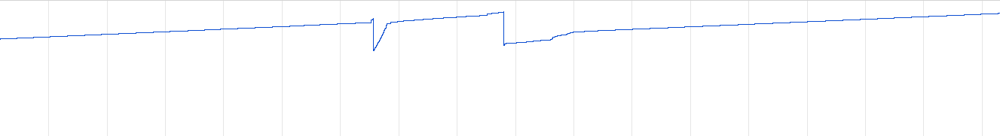
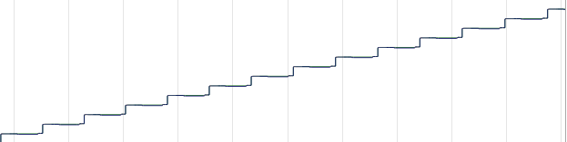

Flow
General performance's lessons learnt
Victor Garrido/@vic_garrido
Frontend Engineer @Mediamonks
What's Flow?
“A rapper's ability to rhyme to phat beats in a skillful manner”
Urban Dictionary
“To hang down loosely and often attractively”
Cambridge Dictionary
“Is the mental state of operation in which a person performing an activity is fully immersed in a feeling of energized focus, full involvement, and enjoyment in the process of the activity”
Mihaly Csikszentmihalyi
You have 4 weeks.
- 18 chapters
- ≈ 550 MB Assets
- Cross browser/Cross Device
- 3 Languages
- Most Important: Must perform! (Keep the flow)
Ready... Steady... Go!

Half way we found a problem
Project wasn't flowing
“Be kind to your future self”
Chris Eppstein, Creator of Compass
And remember
Performance is not a test.
Performance is a feature!
Work in every phase
NETWORK

COMPUTE

RENDER
NETWORK
- Reduce first load
- Design a plan B for low bandwidth
- Lazy loading & on demand
- Batch requests (specially Tracking)
COMPUTE
- Don't micromanage
- Keep main loop clean
- Use RAF (request animation frame)
- Avoid changing styles in event handlers
- Careful with GC
Keep an eye on sawteeth
-


Detect leaks
Careful with Closures
“Your DOM becoming pixels on the screen can be one of the most costly parts of your app’s lifecycle.”
Paul Lewis
RENDER
Style

Layout
- border-bottom-width
- font
- width
- height
- top,left,..
Paint
- border-bottom-color
- background
- width
- height
- color
Composite
- border
- font
- display
- top,left,..
LAYOUT TRASHING
var h1 = element1.clientHeight; // Read (measures the element)
element1.style.height = (h1 * 2) + 'px'; // Write (invalidates current layout)
var h2 = element2.clientHeight; // Read (measure again, so must trigger layout)
element2.style.height = (h1 * 2) + 'px'; // Write (invalidates current layout)
var h3 = element3.clientHeight; // Read (measure again, so must trigger layout)
element3.style.height = (h3 * 2) + 'px'; // Write (invalidates current layout)
Reading and writting the dom multiple times causing reflows
LAYOUT TRASHING QUICK FIX
var h1 = element1.clientHeight; // Read (measures the element)
// Schedule the write operation to be run in the next frame.
raf(function() {
element1.style.height = (h1 * 2) + 'px';
});
var h2 = element2.clientHeight;
raf(function() {
element2.style.height = (h1 * 2) + 'px';
});
var h3 = element3.clientHeight;
raf(function() {
element3.style.height = (h1 * 2) + 'px';
});
THIS IS FLOW
 How Flipboard did it
How Flipboard did it
RENDER
- Careful with layout trashing
- Promote layers: just the ones needed Example
- Composite always better than paint
Hey! We have a budget!
R
Response: 100ms
A
Animation:
16ms
I
Idle:
50ms
L
Load:
1000ms
Takeaway
- Avoid premature optimization
- Design, code and measure.
- Analyse project's nature and use it in your advantage.
- Work with the browser
- Use the tools available